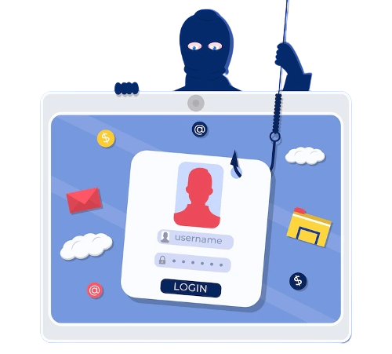
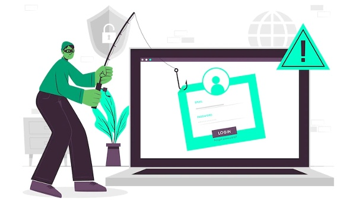

- Malignant Web Links
- Harmful Attachments
- Fraudulent Data Entry Forms
- Spear phishing - Spear phishing witch hunt this email is targeted at a specific person within a privileged account within an organization.
- Untrustworthy link building :Link context in a message might contain a malicious link that appears to be the official business.
- CEO Fraud also known as Business Email Compromise (BEC): Senior marketers and CFOs receive spam emails demanding payments that are ostensibly on behalf of the CEO or other Treasury Department official.
- Inject malicious content into an official site
- Attachments containing malware
- Smishing: Using SMS messages
- Vishing: Using voice calls
- “Evil Twin” Wi-Fi -The attackers spoof a cost-free Wi-Fi signal so their targets will connect to a malicious Wi-Fi hotspot, where man-in-the-middle attacks may be performed.
What Is Phishing?
Phishing is a common term most people have heard of, but may not know the exact meaning of. Phishing is an attempt to trick you into revealing private information such as usernames, passwords and credit card information. The fraudulent emails that may look like they come from your bank, the IRS or another trusted organization are designed to look legit, and lead you to reveal your personal information.
Definition
Phishing is when people send out malicious email messages meant to get people to reveal sensitive information, such as credit card information, online accounts, or Social Security numbers. The perpetrators may plan these scams with the intention of getting victims into divulging sensitive details.

Social engineering is a form of trick artistry that fraud artists use to manipulate human psychology. Examples of social engineering include forgery, misdirection, and lying all of which are employed in phishing emails. In a basic sense, phishing emails utilize social engineering to take advantage of people.
Why is phishing a problem?
Cyber criminals exploit phishing emails because it is very simple, cheap, and effective for them. Email addresses are easy to obtain and e-mails are cheap to send. With little effort, attackers can easily gain access to confidential information. Those who fall for email hammer attempts may be infected by malware, identity theft, and loss of records.
Cybercriminals both before and after them are interested in the personally identifiable information (PII) of individuals like financial account information, credit card numbers, as well as tax and medical records and confidential information regarding clients.
Cybercriminals also use phishing emails to obtain the usernames, passwords, and other authorization codes they need to spy or break into a particular email, social media account, or computer system. Many data breaches, such as the high-profile 2013 Target breach, start with a simple phishing email. A seemingly innocent email can be used by cybercriminals to gain a foothold and get health coverage.
Primary Mechanisms Used in Phishing Emails
Criminals typically attempt to access information using three primary techniques:
Types of Phishing Attacks
Simple credential and data theft have become a target of more advanced phishing tactics. The way an attacker dresses up his endeavor depends on the type of phishing assault. Types of phishing include:

What Is a Phishing Kit?
Phishing instruments help trappers in developing their man-in-the-middle attacks. The Back-end Systems of a Phishing Campaign are known as the Phishing Kit. The kit includes the server, library of the content (e.g:images, graphics, and layout of the website), and data storage that was used to collect user credentials. Another component is domain names. Criminals hijack a number of websites to use in phishing email messages for rapid switching when spam filters do their job and block them. By changing the domain of a phishing URL multiple times, hackers can send messages to other targets.
A phishing kit is also created to evade detection. The scripts deployed in the backend will block addresses that are being used by large security companies and antivirus companies like McAfee, Google, Symantec, and Kaspersky to counter phishing attempts. Domain will appear in security alerts as an example of a safe site, but will show phishing content to a malicious user.
In Conclusion, Phishing attacks are becoming more sophisticated and difficult to prevent. Phishing attacks use emails, text messages and websites containing malicious links in an attempt to trick the victim into providing personal or financial information. Phishing attacks can also take the form of phone calls and door-to-door scams.